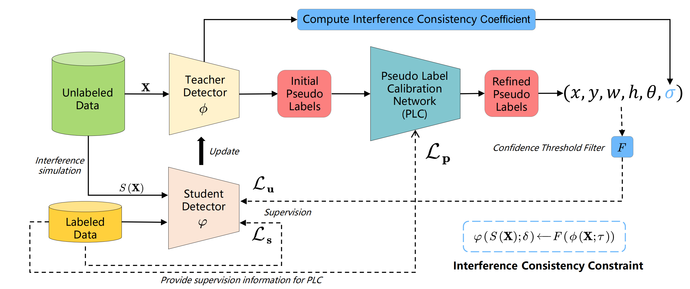
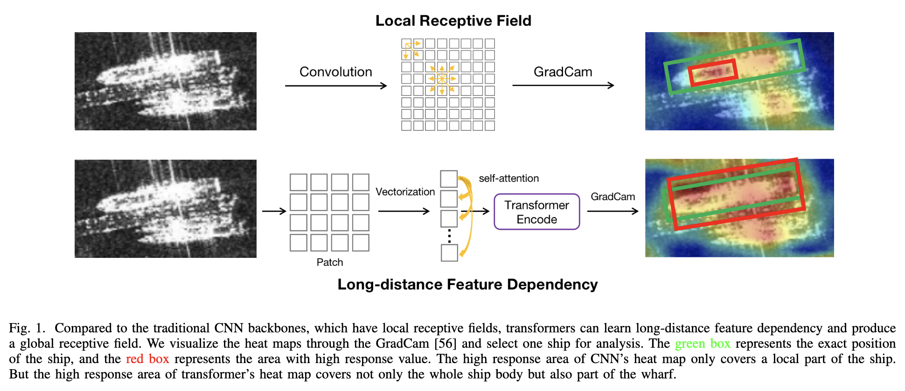

Yue Zhou
🇨🇳 Biography
Yue Zhou (周越)
Yue Zhou is now a Ph.D. student in Department of Electronic Engineering, Shanghai Jiao Tong University. My research advisors are Prof. Xue Jiang and Prof. Xingzhao Liu.
Yue Zhou received the B. E. degree from Electronic and Information Engineering, Beijing University of Posts and Telecommunications, Beijing, China, in 2017.
Yue Zhou's research interests include deep learning and computer vision, with a focus on oriented object detection. He is also the maintainer to the MMRotate open-source project for oriented object detection.
open-source project for oriented object detection.
Yue Zhou received the B. E. degree from Electronic and Information Engineering, Beijing University of Posts and Telecommunications, Beijing, China, in 2017.
Yue Zhou's research interests include deep learning and computer vision, with a focus on oriented object detection. He is also the maintainer to the MMRotate
open-source project for oriented object detection.
He is seeking a full-time research / applied research job on remote sensing.
🔥 News
- 06 / 2023: One paper on semi-supervised object detection is accepted by JSTARS (JCR Q2)
- 01 / 2023: 🚀🚀 A oriented object detection model RTMDet-R is released at MMRotate, which achieves SOTA in speed and accuracy
- 01 / 2023: One collaborative paper on oriented object detection (H2RBox) is accepted by ICLR 2023
- 11 / 2022: One paper on oriented object detection (PVT-SAR) is accepted by JSTARS (JCR Q2)
- 11 / 2022: Jittor implementation of GWD, KLD and KFIoU is supported in JDet
- 10 / 2022: A report on oriented object detection is made at Journal of Radar doctoral forum [slides]
- 10 / 2022: MMRotate 1.x version is released.
- 10 / 2022: 🎉🎉 MMRotate Star number have exceeded 1000!
- 08 / 2022: One collaborative paper on oriented object detection (SCRDet++) is accepted by TPAMI
- 06 / 2022: MMRotate is accepted by ACM MM 2022 as Oral
- 02 / 2022: A PyTorch-based oriented object detection benchmark is released, called MMRotate
- 02 / 2022: Research internship at OpenMMLab
- 08 / 2021: I won the 4st place in Huawei Cloud on defect detection of auto parts track
- 07 / 2021: I won the 5st place in AIWIN on insurance text visual cognition question and answer contest track
- 03 / 2021: One collaborative paper on oriented object detection (DCL) is accepted by CVPR 2021
- 09 / 2020: Research internship at Intel Asia R&D Center.
- 09 / 2020: I'm joining Department of EE at Shanghai Jiao Tong University as a Ph.D. student.
- 12 / 2019: I won the 2st place in Tianzhi Cup on SAR aircraft detection and recognition track
- 07 / 2019: Research internship at Tencent YouTu Lab
- 06 / 2019: I won the 2st place in TEDA&JD Cup on Automatic driving traffic sign recognition based on virtual simulation environment track
- 09 / 2018: I'm joining Department of EE at Shanghai Jiao Tong University as a M.S. student
- 01 / 2018: A harmonica score library is released, called JE


📝 Selected Publications

MMRotate: A Rotated Object Detection Benchmark using PyTorch
Yue Zhou, Xue Yang, Gefan Zhang, Jiabao Wang, Yanyi Liu, Liping Hou, Xue Jiang, Xingzhao Liu, Junchi Yan, Chengqi Lyu, Wenwei Zhang, Kai Chen. In Proceedings of the 30th ACM International Conference on Multimedia (ACM MM, CCF-A), Lisboa, Portugal, Open Source Software Competition, Oral, 2022
[Paper] [Github] [[slides]] [微信公众号宣发]
Yue Zhou, Xue Yang, Gefan Zhang, Jiabao Wang, Yanyi Liu, Liping Hou, Xue Jiang, Xingzhao Liu, Junchi Yan, Chengqi Lyu, Wenwei Zhang, Kai Chen. In Proceedings of the 30th ACM International Conference on Multimedia (ACM MM, CCF-A), Lisboa, Portugal, Open Source Software Competition, Oral, 2022
[Paper] [Github] [[slides]] [微信公众号宣发]

PA Semi-Supervised Arbitrary-Oriented SAR Ship Detection Network based on Interference Consistency Learning and Pseudo Label Calibration
Yue Zhou, Xue Jiang, Zeming Chen, Lin Chen, Xingzhao Liu. IEEE Journal of Selected Topics in Applied Earth Observations and Remote Sensing (JSTARS, JCR Q2), 2023
[Paper]
Yue Zhou, Xue Jiang, Zeming Chen, Lin Chen, Xingzhao Liu. IEEE Journal of Selected Topics in Applied Earth Observations and Remote Sensing (JSTARS, JCR Q2), 2023
[Paper]

PVT-SAR: An Arbitrarily Oriented SAR Ship Detector with Pyramid Vision Transformer
Yue Zhou, Xue Jiang, Guozheng Xu, Xue Yang, Xingzhao Liu, Zhou Li. IEEE Journal of Selected Topics in Applied Earth Observations and Remote Sensing (JSTARS, JCR Q2), 2022
[Paper]
Yue Zhou, Xue Jiang, Guozheng Xu, Xue Yang, Xingzhao Liu, Zhou Li. IEEE Journal of Selected Topics in Applied Earth Observations and Remote Sensing (JSTARS, JCR Q2), 2022
[Paper]


🎖 Competition Awards
- 4st place in Huawei Cloud on defect detection of auto parts track, 2021
- 5st place in AIWIN on insurance text visual cognition question and answer contest track, 2021
- 2st place in Tianzhi Cup on SAR aircraft detection and recognition track, 2019
- 2st place in TEDA&JD Cup on Automatic driving traffic sign recognition based on virtual simulation environment track, 2019